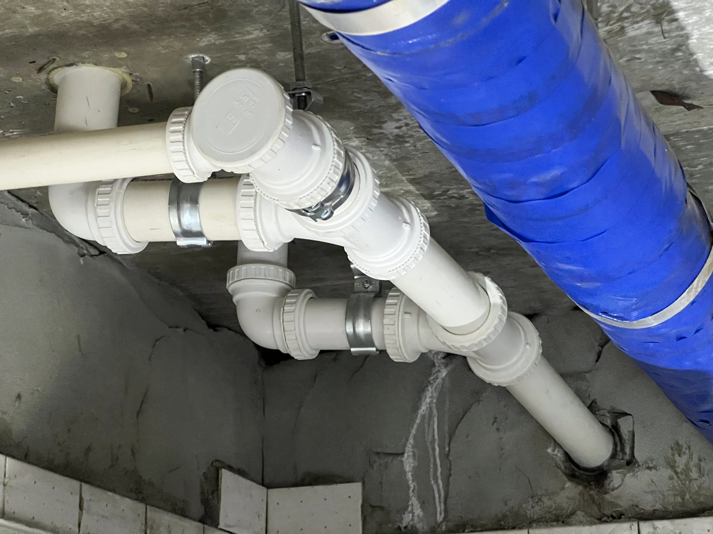
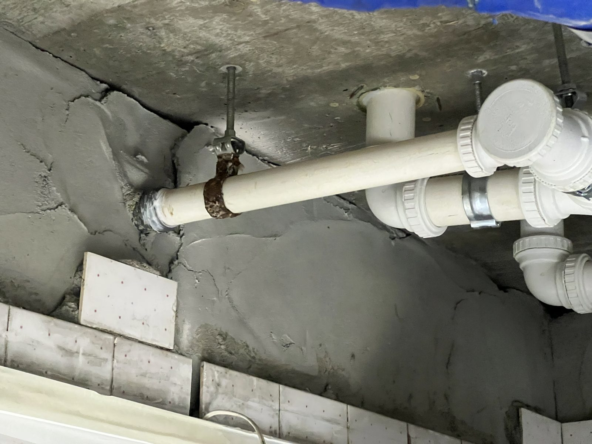
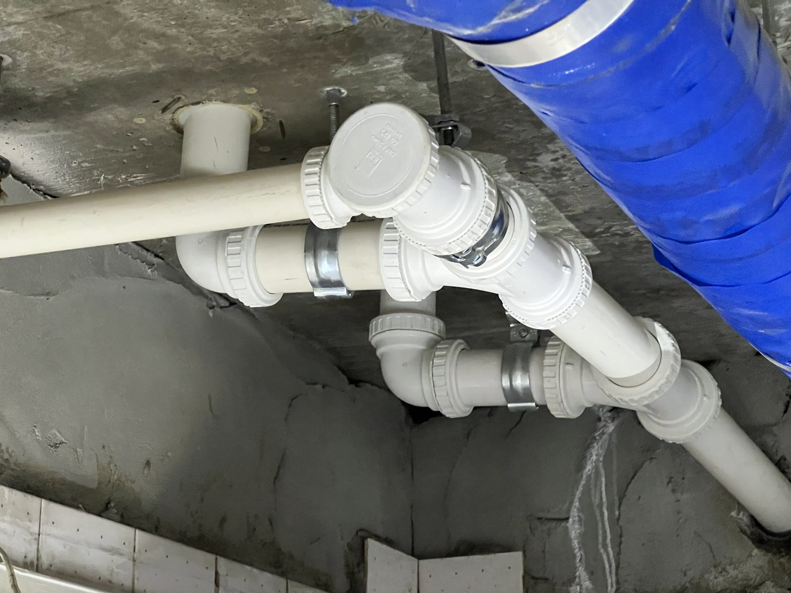

한밭유성아파트 생활하수관 교체 — 물 테스트까지 확인하고 마무리했습니다

대전 한밭유성아파트 세대 생활하수관 노후 구간 교체 기록입니다. 배관 내시경으로 안쪽을 먼저 확인하고, 무엇을 갈았고 마무리를 어떻게 확인했는지 실제 시공 사진과 함께 정리했습니다.
어떤 공사였나요
세면대·주방에서 나온 생활하수가 흐르는 배관(잡배수관)의 노후 구간을 교체한 현장입니다. 이 배관은 천장 슬래브 아래를 지나기 때문에, 문제가 생기면 아래층 천장 쪽에서 먼저 표가 나는 경우가 많습니다. 기존 노후 구간을 걷어내고 새 배관으로 교체했으며, 이음부는 조임식으로 시공해 점검·재작업이 쉬운 구조로 마감했습니다. 철거부터 통수 확인까지 약 3시간이 걸렸습니다.
뜯기 전에 배관 안을 먼저 봤습니다
생활하수관은 겉에서 보면 멀쩡한데 안쪽만 삭아 있는 경우가 있습니다. 그래서 바로 철거하지 않고 배관 내시경으로 안쪽 상태와 문제 구간을 먼저 확인했습니다. 어디까지 갈아야 하는지를 눈으로 확인한 뒤에 손을 대면, 멀쩡한 구간까지 뜯어내지 않아도 됩니다.

새 배관과 이음부
교체 구간은 조임식 이음으로 연결했습니다. 나중에 점검하거나 한 구간만 다시 손봐야 할 때, 배관 전체를 다시 뜯지 않고 그 자리만 열 수 있는 방식입니다. 청소구(점검구)도 손이 닿는 위치에 두어 막힘이 생겼을 때 바로 열 수 있게 했습니다.

마무리는 눈이 아니라 물로 확인합니다
배관 공사의 마무리 확인은 겉모습이 아니라 통수 시험입니다. 교체를 마친 뒤 실제로 물을 흘려보내는 물 테스트를 진행해 이음부 누수가 없는 것을 확인하고 작업을 종료했습니다. 저희는 이 확인 과정을 사진으로 남겨 두었다가, 필요할 때(관리사무소 보고·보험 서류 등) 근거 자료로 쓸 수 있게 정리해 드립니다.

오래된 배관, 언제 교체를 생각해야 하나요
배관은 눈에 안 보이는 자리에서 조용히 늙습니다. 아래층 천장에 얼룩이 생겼거나, 물을 쓸 때마다 어딘가에서 물소리·냄새가 난다면 배관 상태를 확인해 볼 신호입니다. 국가 하자담보책임 기준으로도 급배수 등 설비공사는 2년을 보증하는 공종입니다(만물인테리어는 법정 기간을 그대로 계약서에 명시합니다).
대전에서 배관·누수 걱정이 있으시면
만물인테리어는 누수탐지부터 배관 교체, 뜯은 자리의 방수·타일·도배 복원까지 한 사람이 끝까지 진행합니다. 누수탐지는 위치를 특정하지 못하면 탐지비를 받지 않습니다. 세대 공사는 물론 관리사무소 발주 소규모 보수도 진행하고 있으니 부담 없이 문의해 주세요.